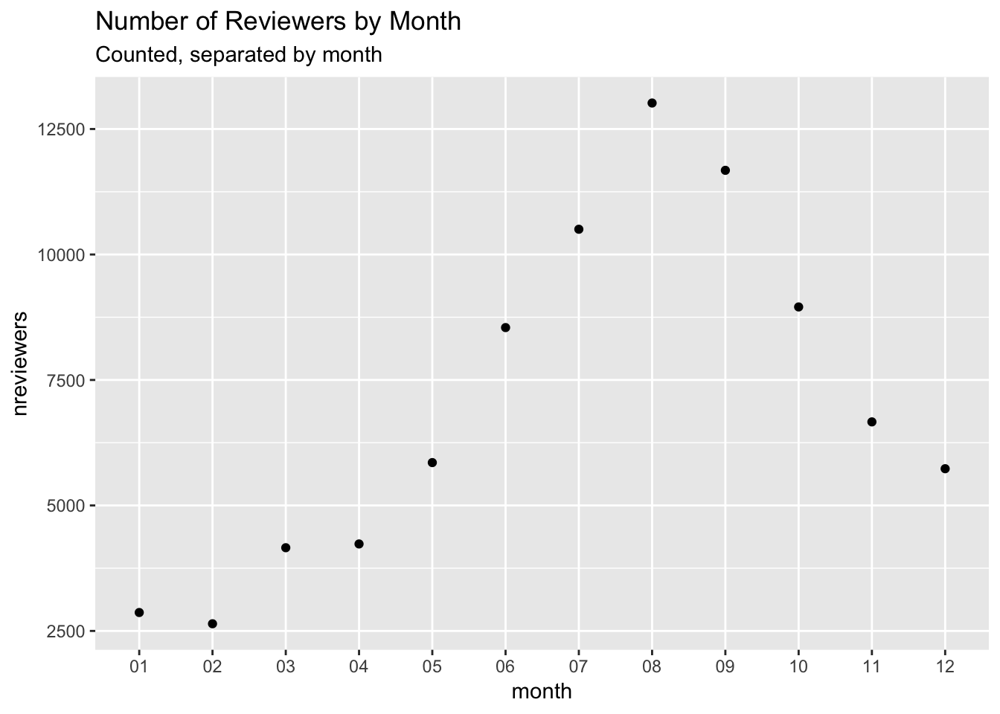

Airbnb Seattle
listings = read.csv("/Users/joshupadhyay/Downloads/seattle/listings.csv")
reviews = read.csv("/Users/joshupadhyay/Downloads/seattle/reviews.csv")
calendar = read.csv("/Users/joshupadhyay/Downloads/seattle/calendar.csv")Including Plots
You can also embed plots, for example:
reviewed_listings$date <- as.Date(reviewed_listings$date)reviews$date <- as.Date(reviews$date)
reviews <- reviews %>%
mutate(month = format(date, "%m"), year = format(date, "%Y"))
n_reviewers <- reviews %>%
group_by(month) %>%
summarize(nreviewers = n()) %>%
ggplot() + geom_point(aes(x = month, y = nreviewers)) + labs(title = 'Number of Reviewers by Month', subtitle = 'Counted, separated by month')n_reviewers
Given that AirBnb review requests are sent to people immediately after they stay in the booking, I’ve made the assumption that all reviews have been made right after people exited their AirBnb. Based on this, it seems as though August is the time that most people stay in an Airbnb.
#dummy var.. probably a MUCH faster way to do this exists
calendar <- calendar %>%
mutate(avail_n = replace(calendar$availible, calendar$available == 'f', 0))
calendar$avail_n <- replace_na(calendar$avail_n, 1)
calendar$date <- ymd(calendar$date)calendar <- calendar %>%
mutate(d_month = format(date, "%m"), d_year = format(date, "%y"))booked_month <- calendar %>%
group_by(listing_id, d_month) %>%
summarize(percent_booked = 1 - (sum(avail_n) / (365)))
# Added up all the days the Airbnb was availible and divided by a year, then did 1 minus that to get the percentage booked
booked_month## # A tibble: 45,816 x 3
## # Groups: listing_id [?]
## listing_id d_month percent_booked
## <int> <chr> <dbl>
## 1 3335 01 0.995
## 2 3335 02 0.997
## 3 3335 03 0.915
## 4 3335 04 0.918
## 5 3335 05 0.915
## 6 3335 06 0.918
## 7 3335 07 0.915
## 8 3335 08 0.915
## 9 3335 09 0.918
## 10 3335 10 0.915
## # ... with 45,806 more rowsid3335 <- booked_month %>%
filter(listing_id == 3335) %>%
ggplot() + geom_point(aes(d_month, y = percent_booked)) + labs(title = "ID 3335")
id2800448 <- booked_month %>%
filter(listing_id == 2800448) %>%
ggplot() + geom_point(aes(d_month, y = percent_booked)) + labs(title = "ID 2800448")
id2830174 <- booked_month %>%
filter(listing_id == 2830174) %>%
ggplot() + geom_point(aes(d_month, y = percent_booked)) + labs(title = "ID 2830174")
id6411259 <- booked_month %>%
filter(listing_id == 6411259) %>%
ggplot() + geom_point(aes(d_month, y = percent_booked)) + labs(title = "ID 6411259")
grid.arrange(id3335,id2800448, id2830174,id6411259)
Interestingly, various AirBnbs are booked up at different times of the year - I wonder if this matters depending on location? (All 4 also seem to be highly booked up in January). To be honest, I didn’t expect a low of approx 91% - I’m sure these AirBnb hosts are making good money.
book_percentage <- booked_month %>%
group_by(d_month) %>%
summarize(agg = mean(percent_booked)) %>%
ggplot() + geom_point(aes(d_month, agg)) + labs(x = "Month", y = "Average % Booked", title = "How Full are AirBnbs In Seattle?", subtitle = "Jan 17, 2016 - 2017")Interestingly, if we assume people write a review right after they stay, (speaking from AirBnb experience, they send an email right after you leave - if you don’t write a review then, you most likely won’t) we can see two different trends between the “number of reviewers” and the fullness of AirBnbs:
grid.arrange(book_percentage, n_reviewers)
While AirBnbs are more full in January, it appears that there are more reviewers in August - this means that people have shorter stays in August, resulting in the decrease in average % booked, but a higher number of reviewers.